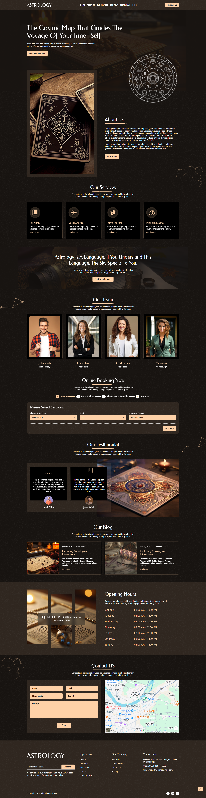
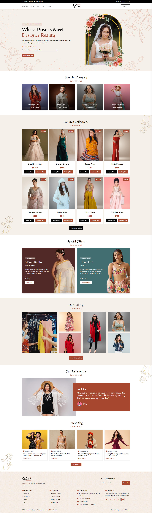
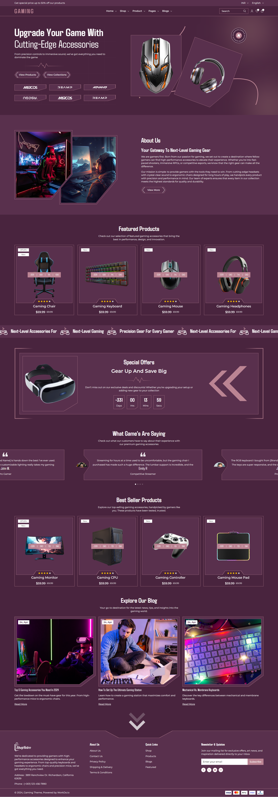
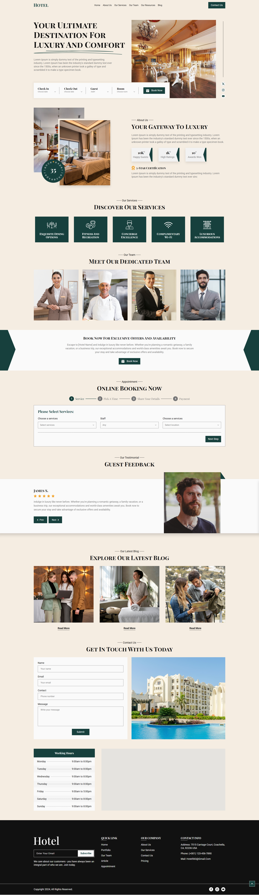
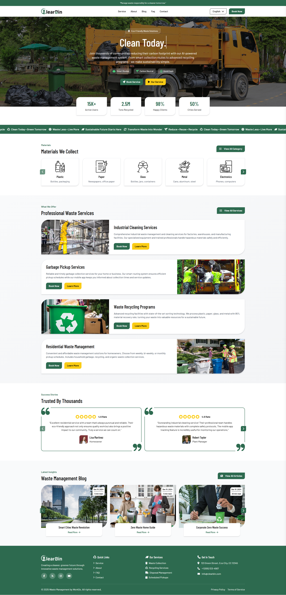
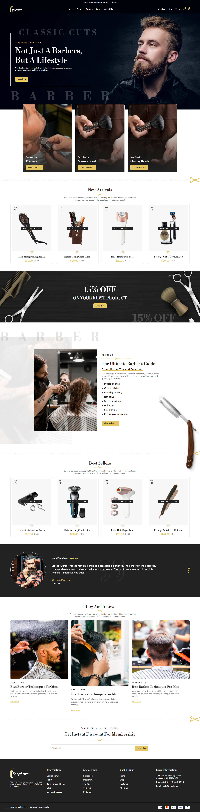
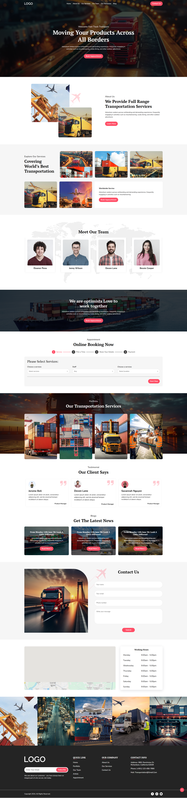
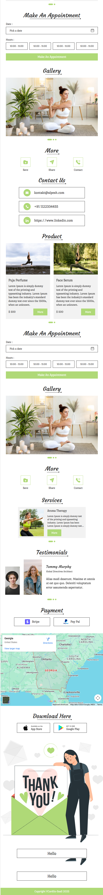
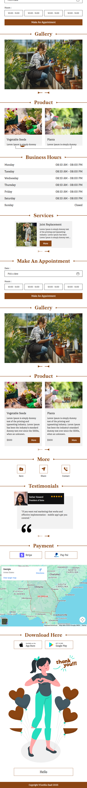

Modern e-commerce solution with html, css , and javascript featuring real-time updates
Create a multi-page layout using HTML, Tailwind CSS, and JavaScript with the help of Replit AI.
Modern E-Commerce Restaurant with html,Tailwind css , and javascript featuring real-time updates

Modern singale layout with html, css , and javascript featuring real-time updates

Modern multi page layout with html,Tailwind css , and javascript featuring real-time updates

Modern multi page layout with html, css , and javascript featuring real-time updates

Single layout with html, css , and javascript featuring real-time updates


Singale page layout using HTML, CSS, and JavaScript for a tasting tourse.


vacard layout using HTML, CSS, and JavaScript for a Health Wellness Service.

vacard layout using HTML, CSS, and JavaScript for a Gardning Service.